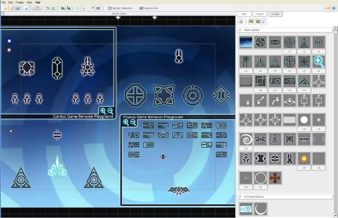
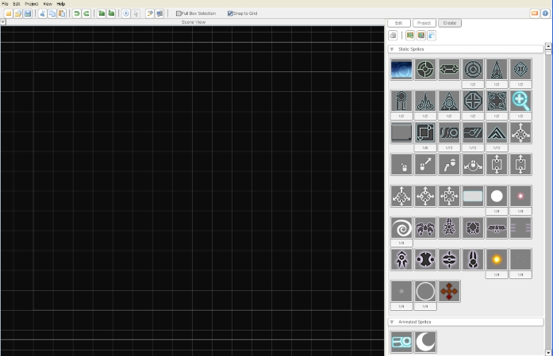
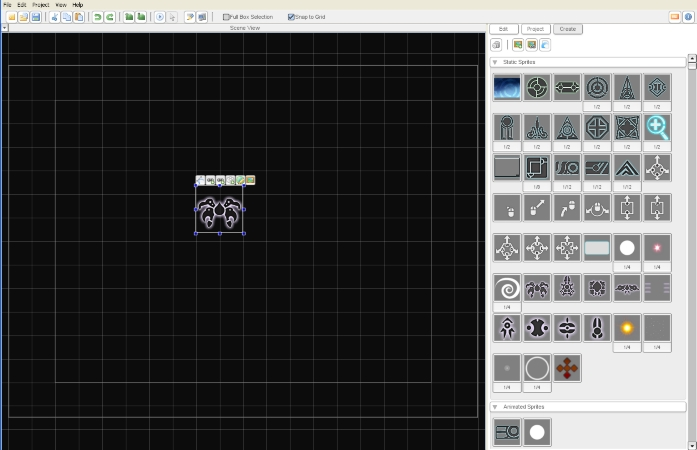
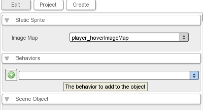
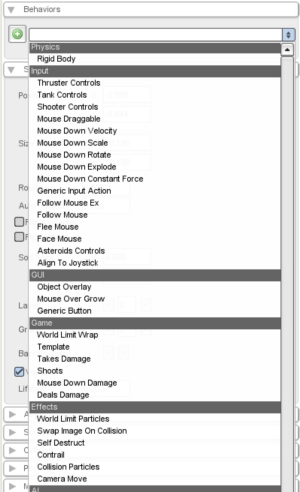
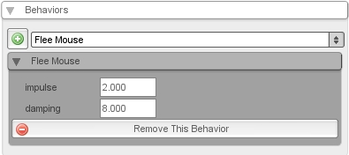
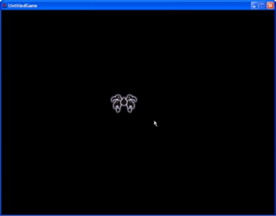

Torque 2D - Behavior Playground Tutorial: Flee Mouse
In this tutorial, you will learn the basics of adding a behavior to objects using T2D's Scene Editor. This tutorial requires no scripting, just the Scene Editor. When you are done with this tutorial, you will have a sprite that flees from the mouse.
Getting Started: A New Scene

Figure 1
Create a new scene. You should now have an empty scene. Save it and name it "FollowMouseTutorial" and then on to the next step!

Adding a Sprite
Navigate to your "Create" tab. Many sprites should already be loaded and ready to use. Pick one and drag it onto the empty scene.

Adding a Behavior
Select your sprite and open the "Edit" tab. There are many attributes that you can set on this object, but right now we are most concerned with behaviors. Open the "Behaviors" menu:

There is a green button and a dropdown menu. Open the dropdown menu; this is a list of all the behaviors that you can add to objects in this project.

Under the "Input" subcategory you will see the Flee Mouse behavior. Select it, then click the green button to add it to the sprite. You can also delete this behavior from the sprite by clicking the red button. You'll notice two options for this behavior: Impulse and Damping (See Figure 6). You can experiment with changing these values later.

Now run your game. When you move the cursor close to the sprite, it should start to move away from you!

Onward!
Now that you know how to add behaviors to objects, try changing the impulse and damp values, then reloading the game to see how the sprite's behavior changes. You can also try adding different behaviors to sprites. When you're ready, you may want to jump into scripting a game that uses behaviors, such as the Fish Game Tutorial. Have fun!